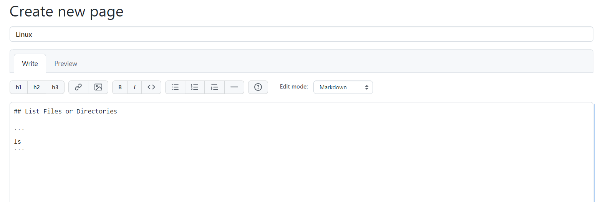

How to Create a Knowledge Base with GitHub
This article shows how to use GitHub Wikis service to create your technical knowledge base.
If your company has decided to create its own knowledge base then wiki is a good approach to do it. There are many options on how to create your wiki knowledge base.
- Use wiki engines and host them on the server. It requires programming knowledge to setup and configure the environment as well as buy hosting and implement access policy.
- Create your own web app. This one requires the same as previous plus development efforts.
- Utilize ready-to-use services like GitHub Wikis.
According to GitHub “Wikis are available in public repositories with GitHub Free and GitHub
Free for organizations, and in public and private repositories with GitHub Pro, GitHub Team, GitHub
Enterprise Cloud and GitHub Enterprise Server…”
So if your company is technology oriented and maybe you need to collect and share code snippets or
templates, create some onboarding content for newbies, GitHub Wiki can be a good choice to consider.
Create a Public Repository
Firstly signup or login to your GitHub account. Then to create a new public repository click “+” button in the top right corner.

You will see the “Create a new repository” page. Type your repository name, select “Public” option, other options can be left in default position. Then click on the “Create repository” button.

Create First Wiki Page
After your repository is created, you will see the “Wiki” tab on the main control panel. Click on that tab.

On the “Create new page” page type the name of the page - “Main” (or whatever you want) and some welcome text (or leave default one). Then click on “Save page” in the bottom right corner.

Now your wiki has one page. Note “Edit” and “New Page” buttons, main area and sidebar.

Create a Few More Wiki Pages
Now let's create a few simple code snippets - one for Python (just printing Hello World) and one for Linux
(list files and directories command). So developers can use or share code snippets or templates like these.
Click on the “New Page” button and create a page for Python as shown below. Type name of the page -
“Python”. On the tab “Write” past some markdown code. In our case it is just the Hello World program.

Select the “Preview” tab to review the final output.

Click on the “Save Page” button on the bottom right corner.
Similarly, let’s create one more page for Linux code snippet (command that lists files and directories).

Remember to click on the “Save Page” button on the bottom right corner.
Add Custom Sidebar
Now you see on the sidebar all pages you have created.

To optimize navigation through sidebar links we can add a custom sidebar. To do this we firstly need URLs of
our pages. Please open Linux, Python and Main pages and copy their URLs, or keep these pages as opened tabs
in your browser to further copy and paste their URLs.
Click the “Add a custom sidebar” button that is below the sidebar right panel. Final code of the new sidebar
page is shown below.

To insert links, use the “Link” button from the control panel.

Insert links for Main, Python and Linux pages using previously saved URLs.

Then click on the “Save Page” button.

Now you have created a public repository with Wiki, a few pages, and sidebar outline to quickly navigate through the knowledge base.
Share Links
To share a link to the Wiki knowledge base just navigate to the Main page from the sidebar outline and copy
the URL in your browser address panel.
If you want to share links of certain pages, similarly, copy URLs of these pages in your browser address
panel.